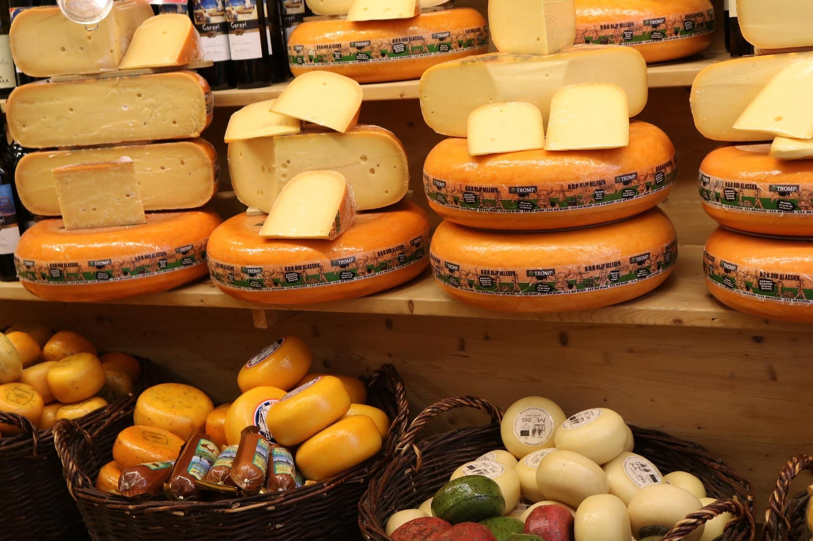
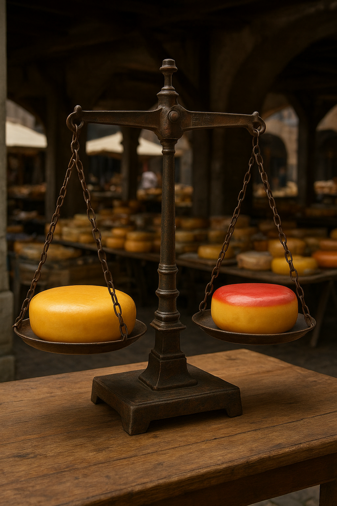
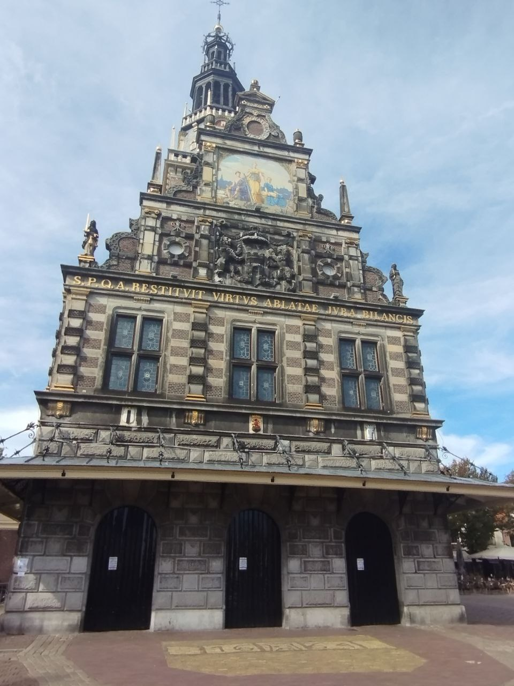
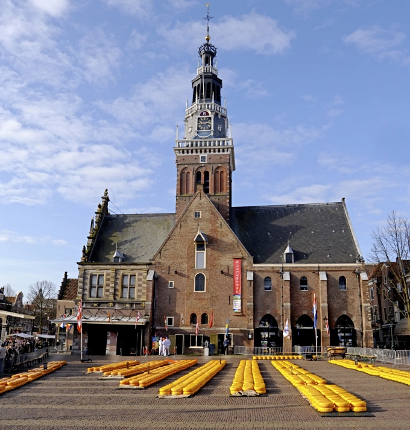
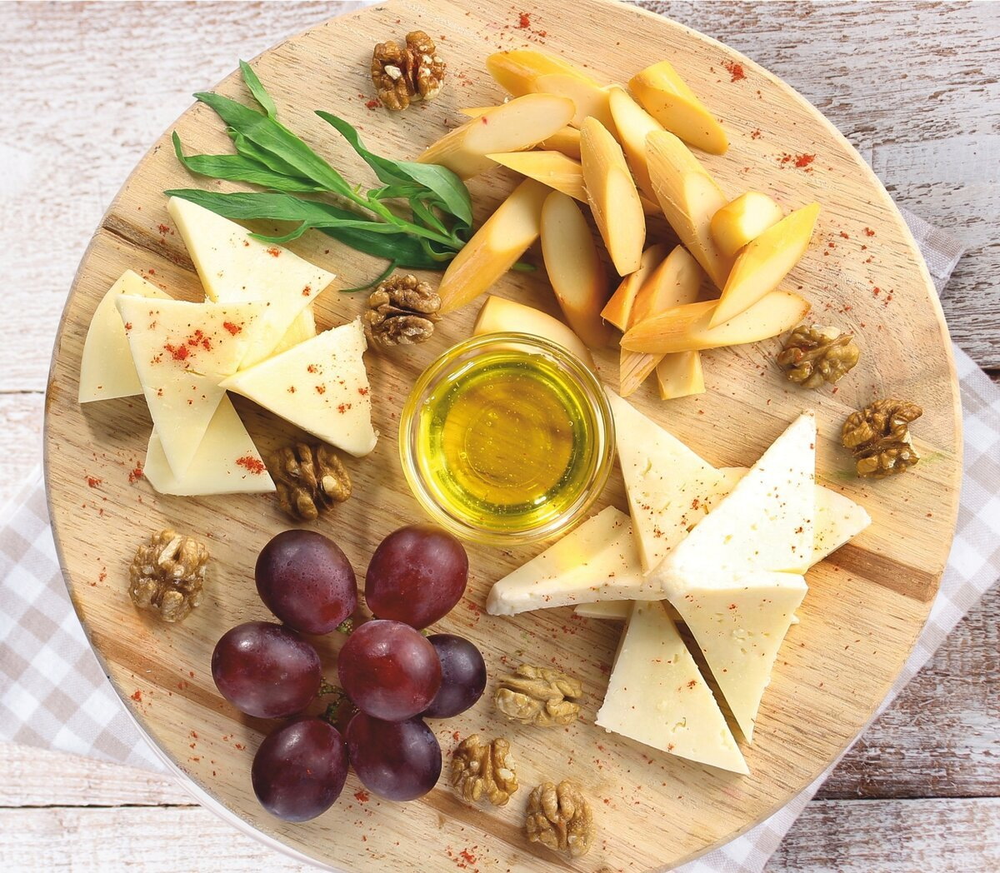

List of Stores
Discover where great cheese begins
Learn more

Top 5
Taste your way through the top 5 cheese spots in Alkmaar — from traditional markets to secret
local favorites.
Learn more

Museum
Discover the history of Dutch cheese making — from wooden presses to golden wheels — inside
Alkmaar’s famous Cheese Museum.
Learn more

Events
Don’t miss the cheese fairs, tastings, and cultural festivals that make Alkmaar a true cheese
lover’s paradise.
Learn more

Contact us
We’re passionate cheese lovers from Alkmaar, dedicated to sharing our city’s rich cheese
traditions.
From local markets to world-famous cheese fairs — we bring the authentic taste of Holland to you
© 2025 Cheese Your Way. All rights reserved.
Made with ❤️ in Alkmaar, Netherlands
📩744972@student.inholland.nl